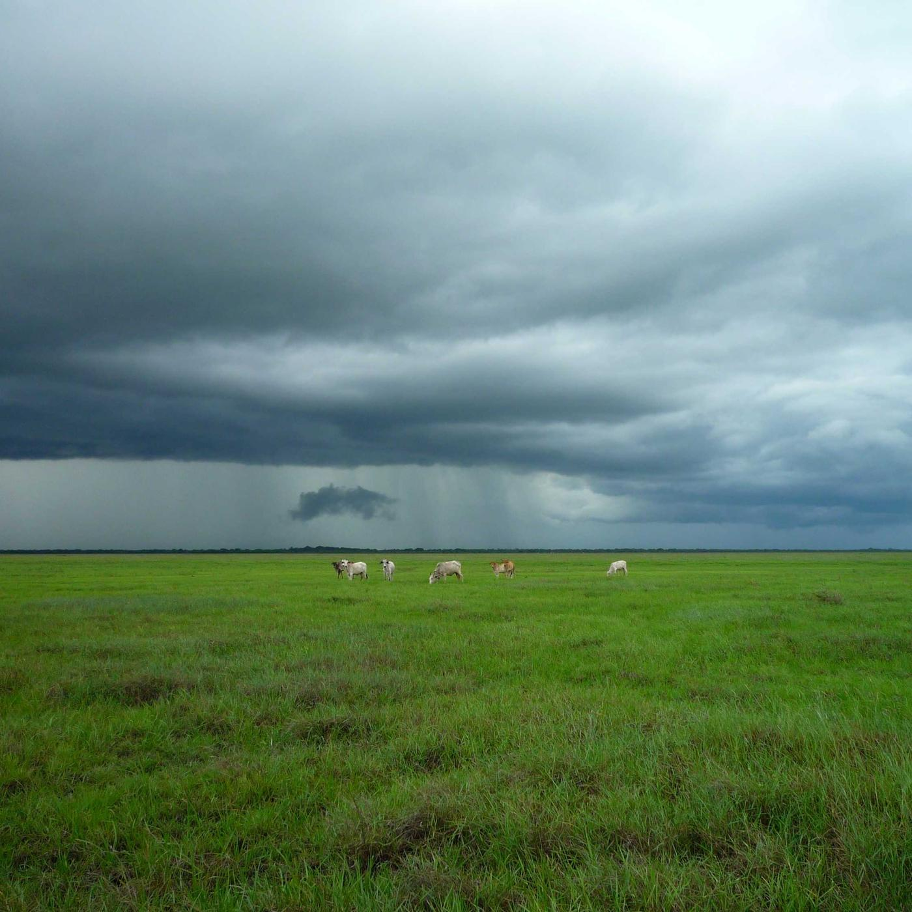

Pixel 10 Pro XL field card
ND8
1/50sshutter, 180°
50–200ISO
6500Kwhite balance

- Default walkaround filter for overcast days and open shade. 6500K takes out their blue cast.
Light
Frame rate
Rig it
286 g of the OM 7P's 300 g limit: phone 232, SmallRig 5174 clamp 35, one K&F ND 19.
The ring covers the 1x and 0.5x, and both take the same ND. On the 0.5x, keep ISO at 200 or below: its smaller sensor is noisier.
0 of 4 done ·
Lock MotionCam
MotionCam Pro, RAW Video or Direct Log. Values follow the dial.
- Mode, 4K, OIS offTap the mode and choose Direct Log or RAW Video. In Capture Configuration, set Capture Resolution to 3840 × 2160. Tap the frame rate and pick the dial's 25 or 50: if it isn't under Supported, try it under Unsupported. In Lens & Viewfinder, turn OIS off so it doesn't fight the gimbal.
- Sensor RAW 12 on the 1x mainSensor Configuration: RAW 12. It turns on the main sensor's dual conversion gain (DCG): multi-gain readout for the most dynamic range and the cleanest shadows.
- Direct Log S-Log3 10-bit HEVCEncode 10-bit HEVC at about 100 Mbps. Colour space Sony S-Gamut3.Cine, transfer function Sony S-Log3, so Final Cut Pro normalises it in one click with its built-in Camera LUT.
- Real-time processing offIn the Direct Log settings, turn Real-Time Sharpness, Detail and Real-Time Highlight Reconstruction off. Running them while recording 10-bit causes dropped frames, buffer stalls and crashes.
- Storage and micRAW Video uses several gigabytes a minute: use Direct Log for long takes, and keep storage below 85% (the counter turns red at about 76%). Capture Configuration › Audio Settings: pick the USB audio device (the gimbal module). Bluetooth mics don't work, only ones plugged in. Turn on Audio Meter in General Settings and check it moves when you speak.
- Direct Preview with clippingHold Vol + to turn on Direct Preview, then press Vol + again for the Sensor Clipping overlay (sun icon), so blown highlights show on screen. Tap the histogram toggle until it's yellow. Direct Log writes straight to compressed video, so any clipping is baked in: watch the RAW histogram and keep the overlay at 0.00%.
- Shutter 1/50s, ISO 50–200Tap the shutter value, slide Shutter Angle (bottom left) to 180°, then hold the value until it turns yellow to lock it. Tap ISO and raise it until the clipping traffic lights start to fill, then back off one step so clipping reads 0.00%. Hold ISO to lock it.
- Lock WB 6500K and focusTap the temperature, set this Kelvin rather than auto, then hold it until it turns yellow to lock it. Direct Log bakes it in; in RAW it can still be changed later. Tap Focus, use the green peaking lines, then hold Focus to lock it.
Pre-flight
MotionCam Direct Log, before each take. Tap each line as you check it.
0 of 7 checked ·